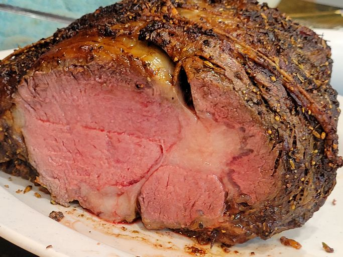

Chef John's Perfect Prime Rib

What is this recipe?
This recipe is a "mathematical method" to create succulent, tasty prime rib everytime.
This fool-proof method is perfect for beginners trying to get into the kitchen.
Now, hop on into this amazing recipe and let's get cooking!
Ingredients
- 4 pound bone in rib roast
- 1/4 cup unsalted butter, softened
- 1 tablespoon freshly ground black pepper
- 1 teaspoon herbes de provence
- kosher salt
Steps
- Gather ingredients together and preheat oven to 500 degrees F
- Combine seasonings and rub the prime rib
- Roast in preheated oven for 20 minutes
- Turn oven off at 20 minute market and let prime rib sit for 2 hours in oven
- Remove slice and serve